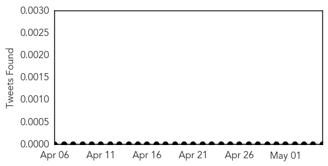

Influenza
30-Day Web Trend
3 alerts, 5 warnings

30-Day Twitter Trend
0 alerts, 0 warnings

Article Locations
Article Confidences

Top Articles:
- 0.998
- UPDATE 1-All workers test negative for MERS at Indiana hospital-official
- 0.998
- All workers test negative for MERS virus at Indiana hospital
- 0.997
- All workers test negative for MERS at Indiana hospital-official
- 0.984
- It's respiratory virus season, cautions National Children’s Hospital -The Tico Times
- 0.964
- NanoViricides Reports Novel Drug Candidates for Treatment of the MERS (Middle East Respiratory Syndrome) Corona Virus Ready for Animal Testing
- 0.954
- Update set on 1st US MERS virus case in Indiana
Top Tweets:
-
No tweets found for May 05, 2014
Chikungunya
30-Day Web Trend
2 alerts, 2 warnings
30-Day Twitter Trend
1 alerts, 0 warnings

Article Locations
Article Confidences

Top Articles:
Top Tweets:
-
No tweets found for May 05, 2014